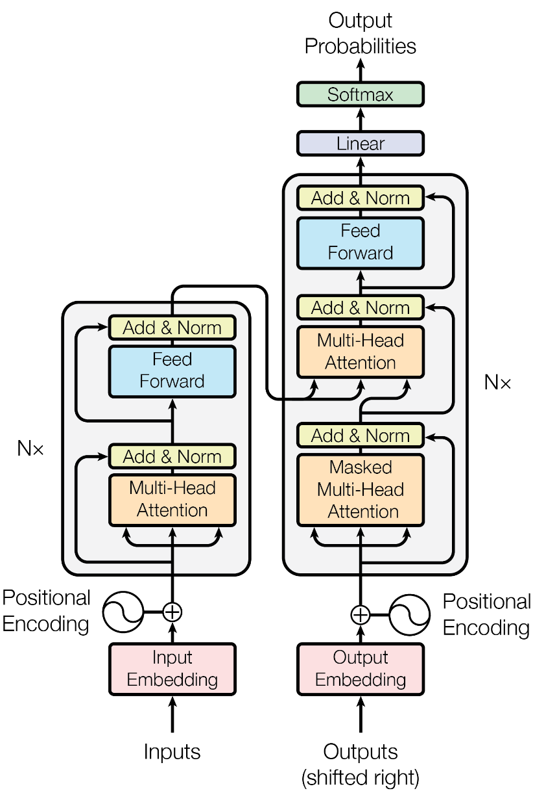
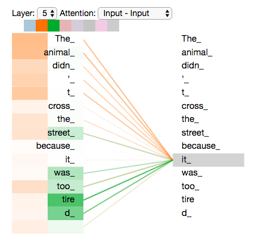
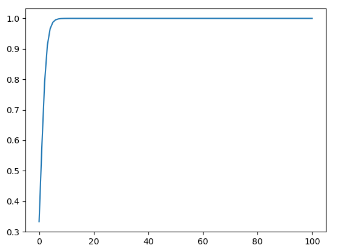
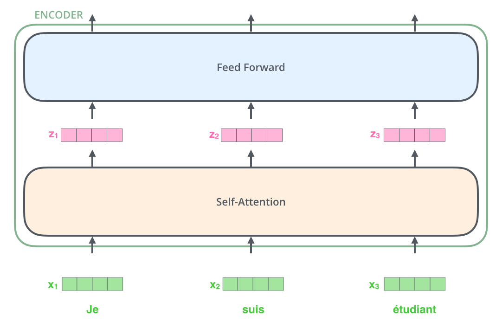
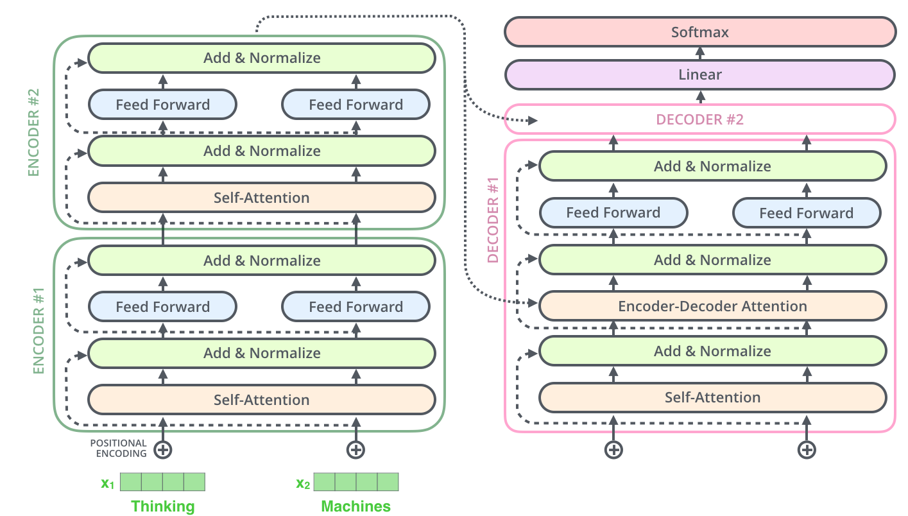

Transformer架构细节
Transformer架构细节

1.Transformer各个模块的作用
（1）Encoder 模块
- 经典的Transformer架构中的Encoder模块包含6个Encoder Block.
- 每个Encoder Block包含两个⼦模块, 分别是多头⾃注意⼒层, 和前馈全连接层.
- 多头⾃注意⼒层采⽤的是⼀种Scaled Dot-Product Attention的计算⽅式, 实验结果表 明, Multi-head可以在更细致的层⾯上提取不同head的特征, ⽐单⼀head提取特征的 效果更佳.
- 前馈全连接层是由两个全连接层组成, 线性变换中间增添⼀个Relu激活函数, 具体的 维度采⽤4倍关系, 即多头⾃注意⼒的d_model=512, 则层内的变换维度d_ff=2048.
（2）Decoder 模块
- 经典的Transformer架构中的Decoder模块包含6个Decoder Block.
- 每个Decoder Block包含3个⼦模块, 分别是多头⾃注意⼒层, Encoder-Decoder Attention 层, 和前馈全连接层.
- 多头⾃注意⼒层采⽤和Encoder模块⼀样的Scaled Dot-Product Attention的计算⽅ 式, 最⼤的 区别在于需要添加look-ahead-mask, 即遮掩”未来的信息”.
- Encoder-Decoder Attention层和上⼀层多头⾃注意⼒层最主要的区别在于Q != K = V, 矩阵Q来源于上⼀层Decoder Block的输出, 同时K, V来源于Encoder端的输出.
- 前馈全连接层和Encoder中完全⼀样.
（3）Add & Norm模块
- Add & Norm模块接在每⼀个Encoder Block和Decoder Block中的每⼀个⼦层的后⾯.
- 对于每⼀个Encoder Block, ⾥⾯的两个⼦层后⾯都有Add & Norm.
- 对于每⼀个Decoder Block, ⾥⾯的三个⼦层后⾯都有Add & Norm.
- Add表示残差连接, 作⽤是为了将信息⽆损耗的传递的更深, 来增强模型的拟合能⼒.
- Norm表示LayerNorm, 层级别的数值标准化操作, 作⽤是防⽌参数过⼤过⼩导致的学习过程异常 , 模型收敛特别慢的问题.
（4）位置编码器 Positional Encoding
- Transformer中采⽤三⻆函数来计算位置编码.
- 因为三⻆函数是周期性函数, 不受序列⻓度的限制, ⽽且这种计算⽅式可以对序列中不同 位置的编码的重要程度同等看待
2.Decoder端训练和预测的输入
- 在Transformer结构中的Decoder模块的输⼊, 区分于不同的Block, 最底层的Block输⼊有其特殊的地⽅。第⼆层到第六层的输⼊⼀致, 都是上⼀层的输出和Encoder的输出。
- 最底层的Block在训练阶段, 每⼀个time step的输⼊是上⼀个time step的输⼊加上真实标 签序列向后移⼀位. 具体来看, 就是每⼀个time step的输⼊序列会越来越⻓, 不断的将之前的 输⼊融合进来.
1
假设现在的真实标签序列等于"How are you?", 当time step=1时, 输⼊张量为⼀个特殊的token, ⽐如"SOS"; 当time step=2时, 输⼊张量为"SOS How"; 当time step=3时, 输⼊张量为"SOS How are", 以此类推...
- 最底层的Block在训练阶段, 真实的代码实现中, 采⽤的是MASK机制来模拟输⼊序列不断添 加的过程.
- 最底层的Block在预测阶段, 每⼀个time step的输⼊是从time step=0开始, ⼀直到上⼀个 time step的预测值的累积拼接张量. 具体来看, 也是随着每⼀个time step的输⼊序列会越来 越⻓. 相⽐于训练阶段最⼤的不同是这⾥不断拼接进来的token是每⼀个time step的预测值, ⽽不是训练阶段每⼀个time step取得的groud truth值
1
2
3
4
5
6
7当time step=1时, 输⼊的input_tensor="SOS", 预测出来的输出值是output_tensor="What";
当time step=2时, 输⼊的input_tensor="SOS What", 预测出来的输出值是output_tensor="is";
当time step=3时, 输⼊的input_tensor="SOS What is", 预测出来的输出值是output_tensor="the";
当time step=4时, 输⼊的input_tensor="SOS What is the", 预测出来的输出值是output_tensor="matter";
当time step=5时, 输⼊的input_tensor="SOS What is the matter", 预测出来的输出值是output_tensor="?";
当time step=6时, 输⼊的input_tensor="SOS What is the matter ?", 预测出来的输出值是output_tensor="EOS", 代表句⼦的结束符, 说明解码结束, 预测结束.
3.Self-attention
Transformer中⼀直强调的self-attention是什么? 为什么能 发挥如此⼤的作⽤? 计算的时候如果不使⽤三元组(Q, K, V), ⽽ 仅仅使⽤(Q, V)或者(K, V)或者(V)⾏不⾏?
（1）self-attention的机制和原理
self-attention是⼀种通过⾃身和⾃身进⾏关联的attention机制, 从⽽得到更好的 representation来表达⾃身.
self-attention是attention机制的⼀种特殊情况: 在self-attention中, Q=K=V, 序列中的每个单词(token)都和该序列中的其他所有单词 (token)进⾏attention规则的计算.
attention机制计算的特点在于, 可以直接跨越⼀句话中不同距离的token, 可以远距离的学习到序列的知识依赖和语序结构.

- 从上图中可以看到, self-attention可以远距离的捕捉到语义层⾯的特征(it的指代对象是 animal).
- 应⽤传统的RNN, LSTM, 在获取⻓距离语义特征和结构特征的时候, 需要按照序列顺序依次 计算, 距离越远的联系信息的损耗越⼤, 有效提取和捕获的可能性越⼩.
- 但是应⽤self-attention时, 计算过程中会直接将句⼦中任意两个token的联系通过⼀个计算 步骤直接联系起来,
（2）关于self-attention为什么要使⽤(Q, K, V)三元组⽽不是其他形式
⾸先⼀条就是从分析的⻆度看, 查询Query是⼀条独⽴的序列信息, 通过关键词Key的提示作⽤, 得到最终语义的真实值Value表达, 数学意义更充分, 完备.
这⾥不使⽤(K, V)或者(V)没有什么必须的理由, 也没有相关的论⽂来严格阐述⽐较试验的结果差异, 所以可以作为开放性问题未来去探索, 只要明确在经典self-attention实现中⽤的是三元组就好
4.Self-attention归一化和放缩
（1）self-attention中的归⼀化概述
训练上的意义：随着词嵌⼊维度d_k的增⼤, q * k 点积后的结果也会增⼤, 在训练时会将 softmax函数推⼊梯度⾮常⼩的区域, 可能出现梯度消失的现象, 造成模型收敛困难.
数学上的意义: 假设q和k的统计变量是满⾜标准正态分布的独⽴随机变量, 意味着q和k满⾜均 值为0, ⽅差为1。** 那么q和k的点积结果就是均值为0, ⽅差为**$d_k$, 为了抵消这种⽅差被放⼤$d_k$** 倍的影响, 在计算中主动将点积缩放**$\frac{1}{\sqrt(d_k)}$, 这样点积后的结果依然满⾜均值为0, ⽅差为 1。
（2）softmax的梯度变化
这⾥我们分3个步骤来解释softmax的梯度问题:
第⼀步: softmax函数的输⼊分布是如何影响输出的
对于⼀个输⼊向量x, softmax函数将其做了⼀个归⼀化的映射, ⾸先通过⾃然底数e将输⼊元素之间的差距先”拉⼤”, 然后再归⼀化为⼀个新的分布。 在这个过程中假设某个输⼊x 中最⼤的元素下标是k, 如果输⼊的数量级变⼤(就是x中的每个分量绝对值都很⼤), 那么在数学上会造成y_k的值⾮常接近1。
具体⽤⼀个例⼦来演示, 假设输⼊的向量$x = [a, a, 2a]$, 那么随便给⼏个不同数量级的值来看看对y3产⽣的影响
1 | a = 1时, y3 = 0.5761168847658291 |
采⽤⼀段实例代码将a在不同取值下, 对应的y3全部画出来, 以曲线的形式展示:
1 | from math import exp |

从上图可以很清楚的看到输⼊元素的数量级对softmax最终的分布影响⾮常之⼤。
结论： 在输⼊元素的数量级较⼤时, softmax函数⼏乎将全部的概率分布都分配给了最⼤值分量所对应的标签
第⼆步: softmax函数在反向传播的过程中是如何梯度求导的
首先，定义神经网络的输入和输出
反向传播就是输出端的损失函数对输⼊端求偏导的过程, 这⾥要分两种情况,
**（1）当 **$i=j$时：
（2）当$ i ≠ j $时：
经过对两种情况分别的求导计算, 可以得出最终的结论如下:
第三步: softmax函数出现梯度消失现象的原因
根据第二步中softmax函数的求导结果, 可以将最终的结果以矩阵形式展开如下:
根据第一步中的讨论结果, 当输入x的分量值较大时, softmax函数会将大部分概率分配给最大的元素, 假设最大元素是x1, 那么softmax的输出分布将产生一个接近one-hot的结果张量y_ = [1, 0, 0,…, 0], 此时结果矩阵变为:
结论：综上可以得出,** 所有的梯度都消失为0(接近于0), 参数几乎无法更新, 模型收敛困难**.
（3）维度与点积大小的关系
针对为什么维度会影响点积的大小, 原始论文中有这样的一点解释如下:
1 | To illustrate why the dot products get large, assume that the components of q and k are independent random variables with mean 0 and variance 1. Then their doct product,q*k = (q1k1+q2k2+......+q(d_k)k(d_k)), has mean 0 and variance d_k. |
分两步对其进行一个推导, 首先就是假设向量q和k的各个分量是相互独立的随机变量, $X = q_i$, $Y = k_i$, X和Y各自有d_k个分量, 也就是向量的维度等于d_k, 有$E(X) = E(Y) = 0$, 以及$D(X) = D(Y) = 1$.
可以得到$E(XY) = E(X)E(Y) = 0 * 0 = 0$
同理, 对于$D(XY)$推导如下:
根据期望和方差的性质, 对于互相独立的变量满足下式：
根据上面的公式, 可以很轻松的得出q*k的均值为$E(qk) = 0$, $D(qk) = d_k$。所以方差越大, 对应的qk的点积就越大, 这样softmax的输出分布就会更偏向最大值所在的分量。一个技巧就是将点积除以$\sqrt{d_k}$ 将方差在数学上重新”拉回1”, 如下所示
最终的结论：通过数学上的技巧将方差控制在1, 也就有效的控制了点积结果的发散, 也就控制了对应的梯度消失的问题!
5.Multi-head Attention
（1）采⽤Multi-head Attention的原因
- 原始论⽂中提到进⾏Multi-head Attention的原因是将模型分为多个头, 可以形成多个子空间间, 让模型去关注不同方面的信息, 最后再将各个⽅⾯的信息综合起来得到更好的效果.
- 多个头进⾏attention计算最后再综合起来, 类似于CNN中采⽤多个卷积核的作⽤, 不同的卷 积核提取不同的特征, 关注不同的部分, 最后再进行融合.
- 直观上讲, 多头注意力有助于神经⽹络捕捉到更丰富的特征信息.
（2）Multi-head Attention的计算⽅式
- Multi-head Attention和单⼀head的Attention唯⼀的区别就在于,** 其对特征张量的最后⼀个维度进行了分割, ⼀般是对词嵌入的embedding_dim=512进⾏切割成head=8, **这样每⼀个head的嵌⼊维度就是512/8=64, 后续的Attention计算公式完全⼀致, 只不过是在64这个维度上进⾏⼀系列的矩阵运算⽽已.
- 在head=8个头上分别进⾏注意⼒规则的运算后, 简单采⽤拼接concat的⽅式对结果张量进 ⾏融合就得到了Multi-head Attention的计算结果.
6.Transformer和RNN
（1）Transformer的并行计算
对于Transformer⽐传统序列模型RNN/LSTM具备优势的第⼀⼤原因就是强⼤的并⾏计算能力.
对于RNN来说, 任意时刻t的输⼊是时刻t的输⼊x(t)和上⼀时刻的隐藏层输出h(t-1), 经过运算后得到当前时刻隐藏层的输出h(t), 这个h(t)也即将作为下⼀时刻t+1的输⼊的⼀部分. 这个计算过程是RNN的本质特征, RNN的历史信息是需要通过这个时间步⼀步⼀步向后传递的. ⽽这就意味着RNN序列后⾯的信息只能等到前⾯的计算结束后, 将历史信息通过hidden state传递给后⾯才能开始计算, 形成链式的序列依赖关系, 无法实现并行.
对于Transformer结构来说, 在self-attention层, ⽆论序列的⻓度是多少, 都可以⼀次性计算所有单词之间的注意⼒关系, 这个attention的计算是同步的, 可以实现并⾏.
（2）Transformer的特征抽取能力
对于Transformer⽐传统序列模型RNN/LSTM具备优势的第⼆⼤原因就是强⼤的特征抽取能力 。
Transformer因为采⽤了Multi-head Attention结构和计算机制, 拥有⽐RNN/LSTM更强⼤的特征抽取能⼒, 这⾥并不仅仅由理论分析得来, 而是⼤量的试验数据和对⽐结果, 清楚的展示了Transformer的特征抽取能⼒远远胜于RNN/LSTM.
注意: 不是越先进的模型就越无敌, 在很多具体的应⽤中RNN/LSTM依然⼤有⽤武之地, 要具体问题具体分析
7.Transformer代替seq2seq？
（1）seq2seq的两大缺陷
- seq2seq架构的第⼀⼤缺陷是将Encoder端的所有信息压缩成⼀个固定⻓度的语义向量中, ⽤这个固定的向量来代表编码器端的全部信息. 这样既会造成信息的损耗, 也⽆法让Decoder 端在解码的时候去⽤注意⼒聚焦哪些是更重要的信息.
- seq2seq架构的第二大缺陷是无法并行, 本质上和RNN/LSTM无法并行的原因⼀样.
（2）Transformer的改进
Transformer架构同时解决了seq2seq的两⼤缺陷, 既可以并⾏计算, ⼜应⽤Multi-head Attention机制来解决Encoder固定编码的问题, 让Decoder在解码的每⼀步可以通过注意⼒去 关注编码器输出中最重要的那些部分.
8.Transformer并行化
（1）Encoder并行化

- 上图最底层绿⾊的部分, 整个序列所有的token可以并⾏的进⾏Embedding操作, 这⼀层的处理是没有依赖关系的.
- 上图第⼆层⼟⻩⾊的部分, 也就是Transformer中最重要的self-attention部分, 这⾥对于任意⼀个单词⽐如x1, 要计算x1对于其他所有token的注意⼒分布, 得到z1. 这个过程是具有依赖性的, 必须等到序列中所有的单词完成Embedding才可以进⾏。因此这⼀步是不能并⾏处理的。 但是从另⼀个⻆度看, 我们真实计算注意⼒分布的时候, 采⽤的都是矩阵运算, 也就是可以⼀次性的计算出所有token的注意⼒张量, 从这个⻆度看也算是实现了并⾏, 只是矩 阵运算的”并⾏”和词嵌⼊的”并⾏”概念上不同⽽已.
- 上图第三层蓝⾊的部分, 也就是前馈全连接层, 对于不同的向量z之间也是没有依赖关系的, 所以这⼀层是可以实现并⾏化处理的. 也就是所有的向量z输⼊Feed Forward⽹络的计算可以同步进⾏, 互不⼲扰
（2）Decoder的并行化

- Decoder模块在训练阶段采用了并行化处理。 其中Self-Attention和Encoder-Decoder Attention两个子层的并行化也是在进行矩阵乘法, 和Encoder的理解是一致的. 在进行Embedding和Feed Forward的处理时, 因为各个token之间没有依赖关系, 所以也是可以完全并行化处理的, 这里和Encoder的理解也是一致的.
- Decoder模块在预测阶段基本上不认为采用了并行化处理. 因为第一个time step的输入只是一个”SOS”, 后续每一个time step的输入也只是依次添加之前所有的预测token.
- 注意: 最重要的区别是训练阶段目标文本如果有20个token, 在训练过程中是一次性的输入给Decoder端, 可以做到一些子层的并行化处理. 但是在预测阶段, 如果预测的结果语句总共有20个token, 则需要重复处理20次循环的过程, 每次的输入添加进去一个token, 每次的输入序列比上一次多一个token, 所以不认为是并行处理.
（3）总结
Transformer架构中Encoder模块的并行化机制
- Encoder模块在训练阶段和测试阶段都可以实现完全相同的并行化.
- Encoder模块在Embedding层, Feed Forward层, Add & Norm层都是可以并行化的.
- Encoder模块在self-attention层, 因为各个token之间存在依赖关系, 无法独立计算, 不是真正意义上的并行化.
- Encoder模块在self-attention层, 因为采用了矩阵运算的实现方式, 可以一次性的完成所有注意力张量的计算, 也是另一种”并行化”的体现.
Transformer架构中Decoder模块的并行化机制
- Decoder模块在训练阶段可以实现并行化.
- Decoder模块在训练阶段的Embedding层, Feed Forward层, Add & Norm层都是可以并行化的.
- Decoder模块在self-attention层, 以及Encoder-Decoder Attention层, 因为各个token之间存在依赖关系, 无法独立计算, 不是真正意义上的并行化.
- Decoder模块在self-attention层, 以及Encoder-Decoder Attention层, 因为采用了矩阵运算的实现方式, 可以一次性的完成所有注意力张量的计算, 也是另一种”并行化”的体现.
- Decoder模块在预测计算不能并行化处理.